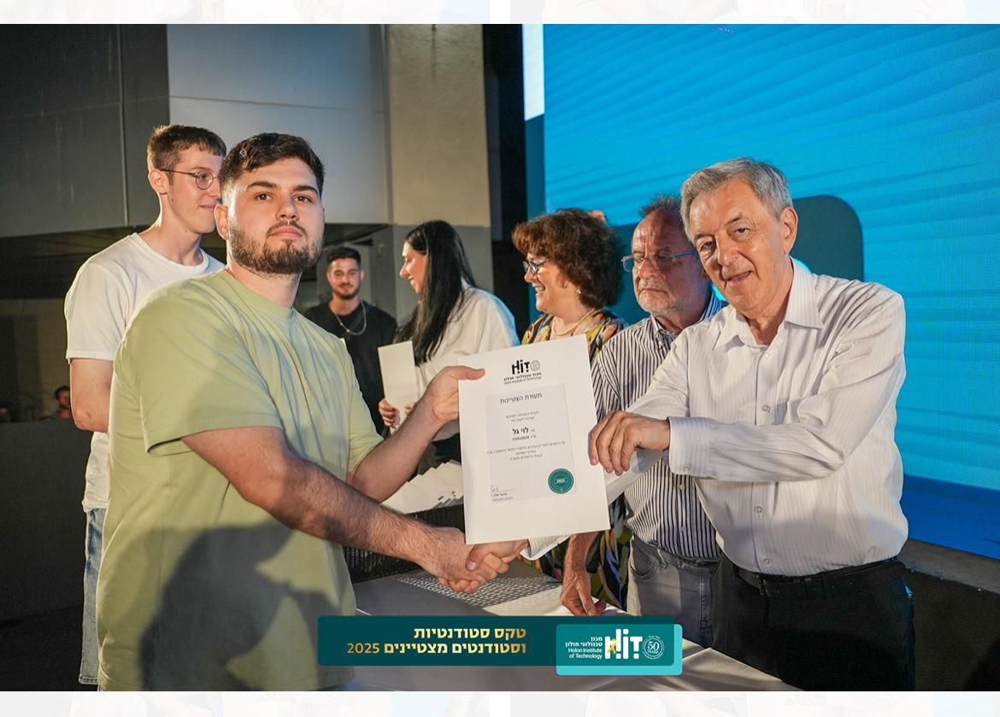

Gal Levy

Summary
I am a software engineer with a passion for building web applications.
Skills
- C, C++, Python, GitHub version control, Object-Oriented Programming principles, API Integration
- Relevant Coursework: Data Structures, Algorithms, Object-Oriented Programming, Computer Networks, Operating systems
- Languages: Hebrew - Fluent, English - Proficient
Education
Bachelor of Science, Computer Science
Holon Institute of Technology (HIT)
Expected Graduation: 2026
Current GPA: 95
Awards and Certifications